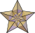
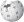

File:Capitol Building Full View.jpg
From Wikipedia, the free encyclopedia
Size of this preview: 800 × 343 pixels. Other resolutions: 320 × 137 pixels | 640 × 274 pixels | 1,024 × 439 pixels | 1,280 × 549 pixels | 7,168 × 3,072 pixels.
{kind=link}
{kind=link}
{kind=link}
{kind=link}
{kind=link}
Original file (7,168 × 3,072 pixels, file size: 10.25 MB, MIME type: image/jpeg)
| This is a file from the Wikimedia Commons. Information from its description page there is shown below. Commons is a freely licensed media file repository. You can help. |
|  | This is a featured picture, which means that members of the community have identified it as one of the finest images on the English Wikipedia, adding significantly to its accompanying article. If you have a different image of similar quality, be sure to upload it using the proper free license tag, add it to a relevant article, and nominate it. |
|  | This image was selected as picture of the day on the English Wikipedia for August 21, 2007. |
{kind=link}
{kind=link}
{kind=link}
File history
Click on a date/time to view the file as it appeared at that time.
| Date/Time | Thumbnail | Dimensions | User | Comment | |
|---|---|---|---|---|---|
| current | 20:25, 16 December 2011 |  | 7,168 × 3,072 (10.25 MB) | Юкатан | level, contrast |
| 17:39, 21 August 2007 |  | 7,168 × 3,072 (9.91 MB) | Responsible? | {{Information |Description=The western (front) side of the United States Capitol. The U.S. Capitol serves as the location for Congress, the legislative branch of the U.S. federal government. It is located in Washington, D.C., on top of Capitol Hill at the |
File usage
The following pages on the English Wikipedia link to this file (pages on other projects are not listed):
- 110th United States Congress
- 111th United States Congress
- United States
- Talk:Indo-Saracenic Revival architecture
- Talk:Neoclassical architecture
- User:AmateurEditor/list
- User:Another Believer/Travel/United States
- User:Eloneliewhy
- User:F McGady
- User:MO's Nation/sandbox
- User:Presidentman/potd/3 July 2009
- User:Stephen100002/sandbox
- User:TheVirginiaHistorian
- User:TheVirginiaHistorian/sandbox
- User talk:Noclip
- Wikipedia:Featured picture candidates/April-2007
- Wikipedia:Featured picture candidates/US Capitol 2
- Wikipedia:Featured pictures/Places/Architecture
- Wikipedia:Featured pictures thumbs/07
- Wikipedia:Picture of the day/August 2007
- Wikipedia:Reference desk/Archives/Miscellaneous/2010 June 9
- Wikipedia:Wikipedia Signpost/2007-04-30/Features and admins
- Wikipedia:Wikipedia Signpost/2007-04-30/SPV
- Template:POTD/2007-08-21
- Template:POTD protected/2007-08-21
- Portal:National Register of Historic Places/Portal picture
- Portal:National Register of Historic Places/Portal picture/8
- Portal:Politics/Featured picture
- Portal:Politics/Featured picture/5
Global file usage
The following other wikis use this file:
- Usage on af.wikipedia.org
- Usage on an.wikipedia.org
- Usage on ar.wikipedia.org
- Usage on be-tarask.wikipedia.org
- Usage on be.wikipedia.org
- Usage on bn.wikipedia.org
- Usage on bxr.wikipedia.org
- Usage on ca.wikipedia.org
- Usage on ca.wikinews.org
- Usage on ch.wikipedia.org
- Usage on da.wikipedia.org
- Usage on de.wikipedia.org
- Usage on el.wikipedia.org
- Usage on en.wikinews.org
- Usage on eo.wikipedia.org
- Usage on es.wikipedia.org
- Estado
- Política de los Estados Unidos
- Arquitectura en Estados Unidos
- Capitolio de los Estados Unidos
- Hito Histórico Nacional
- Wikipedia:Imágenes destacadas/Lugares
- Wikipedia:Imágenes destacadas/Lugares/Norteamérica
- 110.º Congreso de los Estados Unidos
- 111.º Congreso de los Estados Unidos
- Wikipedia:Recurso del día/301 - 400
- Wikipedia:Candidatos a recursos destacados/Capitol Building Full View.jpg
- Estados Unidos
- Wikipedia:Candidatos a recursos destacados/Abril-2009
- Plantilla:RDD/311
- Usuario:Andrés 3000
- Wikipedia:Recurso del día/agosto de 2009
- Anexo:Cronología de los monumentos
- Wikipedia:Recurso del día/octubre de 2010
- 112.º Congreso de los Estados Unidos
- Wikipedia:Recurso del día/mayo de 2012
- Wikipedia:Recurso del día/mayo de 2014
View more global usage of this file.
{kind=link}
{kind=link}
{kind=link}
{kind=link}
{kind=link}
{kind=link}
{kind=link}
{kind=link}